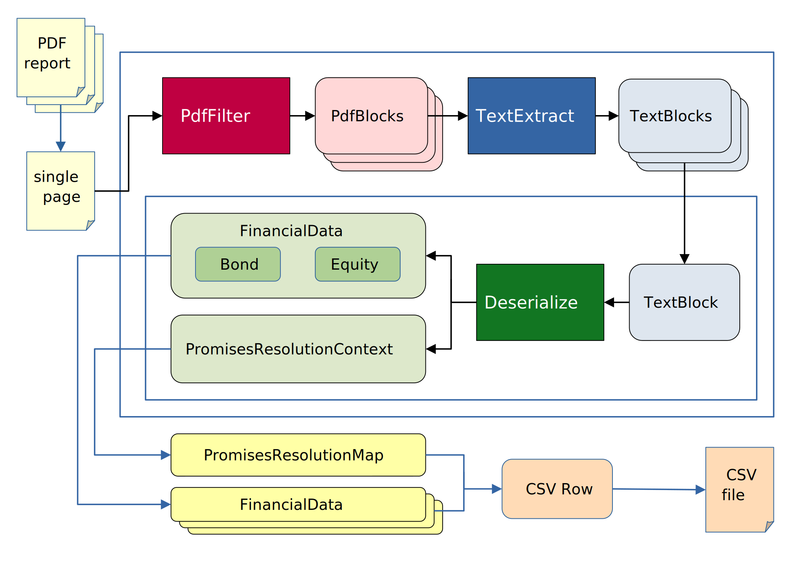

Sviluppo del codice
Il focus di questa guida è lo sviluppo del codice relativo alla elaborazione specifica di un formato pdf. Con formato pdf, identifichiamo una serie di operazioni e di codice necessario per elaborare una serie di report finanziari in csv.
Abbiamo deciso di implementare la struttura in modo sufficientemente flessibile da elaborare report diversi, ma facendo alcune ipotesi in maniera da semplificare e standardizzare il processo di parsing. L’obbiettivo è quello di non ripetere il codice comune a tutti i formati in modo che le contribuzioni si possono concentrare sull’integrazione di nuovi pdf supportati.
Lo schema generale per l’elaborazione di un pdf può essere rappresentato con l’immagine seguente:
Il documento è prima diviso in pagine e convertito in una stringa xml usando il pacchetto PyMuPDF . L’assunzione è che ogni pagina del documento contenga l’informazione necessaria per delineare il contesto e capire il significato dei singoli dati rilevanti nel file csv finale. Questa assunzione può sembrare abbastanza restrittiva, ma risulta essenziale per semplificare e realizzare algoritmi ragionevolmente rapidi nell’elaborazione. Questa assunzione rende possibile implementare un parallelismo a livello di dati sulle pagine pdf; attualmente l’implementazione esegue su diversi batch di pagine in parallelo creando processi diversi (quando si è in MODALITA” BATCH il parallelismo è fatto a livello di documento e le diverse pagine sono processate sequenzialmente). L’idea dietro questa assunzione è che una pagina pdf ben ideata dovrebbe contenere tutte le informazioni necessarie ad un essere umano per capire il contesto. Se questa assunzione dovesse dimostrarsi troppo restrittiva, non potremmo assumere che il contesto delle pagine debba necessariamente essere le pagine precedenti, ma saremmo costretti a analizzare il documento diverse volte così da estrarre il contesto rilevante.
Avvertimento
Alcune volte l’informazione non sembra essere autonoma ma la sua dipendenza è in realtà una semplice relazione uno ad uno, uno a molti o molti a molti tra oggetti diversi. Un esempio di questo può essere il caso dell’analisi di un documento PDF contenente alcuni dati relativi a clienti e, in altre pagine, informazioni su ordini e prodotti. In questo esempio sembra che i record Cliente, Prodotto e Ordine siano interdipendenti, ma a seconda della struttura del report, l’algoritmo può analizzare le informazioni autonome di Clienti, Prodotti e Ordini e solo poco prima dell’output in CSV collegare i diversi record tramite un campo id (per comprendere meglio l’approccio proposto per gestire questi casi, si pensi al concetto di chiave esterna nel contesto dei database). Il meccanismo per supportare questo grado di interdipendenza avviene attraverso l’uso di Promises (promesse) e l’output di PromisesResolutionContexs (contesti per la risoluzione delle promesse). L’assunzione viene meno in presenza di una vera dipendenza delle informazioni.
Lo sviluppatore che desidera aggiungere una serie di report a quelli supportati, deve fornire l’implementazione specifica delle funzioni PdfFilter, TextExtract e Deserialize (insieme alle classi PdfBlock e TextBlock). Ogni pagina xml verrà analizzata da una funzione PdfFilter che produrrà una lista di PdfBlocks rilevanti. Il contenuto di questi blocchi viene elaborato da una funzione chiamata TextExtract che restituisce una lista di blocchi con una relazione uno a uno con le informazioni che popoleranno una riga del csv, chiamati TextBlock. Ogni blocco viene analizzato indipendentemente in un oggetto (un FinancialData astratto) che deve essere uno di quelli riconosciuti dal sistema (attualmente Equity e Bond) o un PromisesResolutionContext. Il FinancialData può contenere dati effettivi o valori differiti chiamati in questo contesto “promesse” di valore. Nel caso più comune i dati finanziari contengono tutte le informazioni rilevanti e vengono serializzati in un dizionario Python in modo predefinito e scritti nel file csv risultante.
PdfFilter
Lo scopo di questa funzione è filtrare dalla rappresentazione xml della pagina pdf le informazioni rilevanti utilizzando il layout o la firma tipografica. Un vincolo che abbiamo scelto di rispettare è utilizzare solo informazioni relative all’aspetto grafico del pdf senza analizzare semanticamente il contenuto testuale o valutarne il significato. Questo vincolo è importante per suddividere la complessità dell’analisi di un pdf in passi più semplici e standardizzati. La tipica funzione PdfFilter esaminerà il font, la posizione delle diverse parti del pdf ed eventualmente parti di testo fisse considerate parte del layout della pagina (ad esempio un’intestazione presente in tutte le pagine), da cui ricaverà alcune informazioni e le converrà in PdfBlocks con i relativi metadati personalizzati.
TextExtract
Lo scopo di questa funzione è estrarre dai PdfBlocks i blocchi di testo rilevanti e aggiungere informazioni semantiche. In particolare, questa funzione riceve in input la lista delle aziende target e analizza il contenuto del testo variabile presente nei PdfBlocks. La tipica funzione TextExtract utilizzerà regular expressions per comprendere il ruolo di ogni parte del testo ed estrarre le informazioni rilevanti dai dati finanziari relativi alle aziende di interesse.
Deserialize
Lo scopo di questa funzione è trasformare le informazioni analizzate in un oggetto Python con campi standardizzati e validarli. Questa funzione convertirà i dati nei tipi Python che meglio riflettono la loro natura. In questa fase non viene fatto alcun filtraggio, ogni TextBlock corrisponderà a un oggetto Python. Questo vincolo focalizza la funzione sulle operazioni di conversione dei diversi campi. La classe astratta prodotta da questa funzione si chiama FinancialData. Ogni campo della classe è di sola lettura e consiste in alcune informazioni principali e alcune aggiuntive. Le classi concrete che ereditano da FinancialData sono attualmente Equity e Bond (la classe bond ha il tasso di interesse e la data di scadenza come informazioni aggiuntive). Questi oggetti vengono poi convertiti in modo predefinito in un dizionario Python e quindi, con Pandas, in un dataframe scritto direttamente in un file csv. Il FinancialData solitamente contiene tutti i valori concreti, ma a volte può accadere che alcuni campi siano risolvibili solo dopo l’analisi completa; per questi casi si rimanda alla sezione Promises
PdfBlock e TextBlock
Questi blocchi consistono in tre parti:
Un
BlockType(PdfBlockTypeeTextBlockType), ovvero un’etichetta obbligatoria che identifica il ruolo grafico e semantico dell’informazione. Questi due campi sono implementati come enumerazioni (enum) e i valori possibili devono essere definiti dallo sviluppatore del formato (fa parte delle specifiche del formato).Un campo
metadata, che dovrebbe contenere dati personalizzati relativi a informazioni grafiche e semantiche. IlBlockTypedovrebbe correlarsi con le chiavi attese nel campo metadata. L’implementazione è un dizionario Python libero e opzionale.Un campo opzionale
content, che dovrebbe contenere le informazioni testuali nel pdf relative al blocco.
Oltre a questi campi, il TextBlock ha un PdfBlock associato da cui è estratto (se derivato da più blocchi, viene considerato quello più importante).
Promise (promessa)
Questa classe è una classe generica che esiste in forme più concrete come SubfundPromise o CurrencyPromise e rappresenta un segnaposto per un’informazione risolvibile solo dopo l’analisi completa del pdf. Quando un FinancialData viene istanziato, lo sviluppatore può promettere («promise») che il dato sarà fornito inserendo una promise come valore. La promise è caratterizzata da un campo id che la identifica per la risoluzione a un valore specifico post-analisi. Il valore verrà risolto usando una PromisesResolutionMap che collega gli id a valori o ad altre Promises in una catena che deve chiudersi con un valore concreto. In questo modo, appena prima della generazione del csv, avvengono le sostituzioni e i campi effettivi vengono calcolati usando la mappa. Questa mappa è costruita unendo tutti i PromisesResolutionContexts in output dalla funzione deserialize. I PromisesResolutionContexts devono essere dizionari Python con una chiave (da abbinare agli id delle Promises) e un valore (concreto o a sua volta una Promise).
Avvertimento
L”id deve essere fornito una sola volta nell’intero processo di analisi. Se lo stesso id appare in due diversi PromisesResolutionContexts, il valore viene sovrascritto in modo non prevedibile.
Nel pratico
Per aggiungere il supporto a un nuovo formato, scegliere un nome e creare una directory con lo stesso nome in src/freeports_analysis/formats. In questa directory è possibile inserire qualsiasi numero di file e sottodirectory, con l’unico vincolo che, quando importata come submodulo, il pacchetto si aspetta di trovare le tre funzioni PdfFilter, TextExtract, Deserialize con le rispettive firme, e la definizione dei due enum PdfBlockType e TextBlockType. Come riferimento, è possibile usare il formato _default come template. Per facilitare l’aggiunta di nuovi formati, forniamo una serie di utility nel submodulo src/freeports_analysis/formats_utils, suddivise in quattro categorie:
funzioni utili per creare l’algoritmo di elaborazione
decoratori per aggiungere funzionalità standard alle funzioni di parsing
decoratori che forniscono implementazioni standard di
PdfFilter,TextExtracteDeserializeenum contenenti implementazioni comuni di
PdfBlockTypeeTextBlockType
L’obiettivo è identificare pattern di parsing ripetitivi e creare routine parametrizzabili e riutilizzabili. Per attivare il supporto a un formato, il suo nome in MAIUSCOLO va aggiunto al file src/freeports_analysis/data/format_url_mapping.yaml; questo file contiene nomi di formati (il nome in minuscolo corrisponderà al modulo caricato per l’analisi) e una lista di espressioni regolari applicate agli URL forniti (URL) come argomento del programma, per inferire il formato corretto durante l’analisi di risorse remote.
Nota
l’ordine delle espressioni regolari e dei formati è rilevante, perché quello inferitoè il primo che concorde con quelli nella lista
Infine, nel repository è presente una directory devtools/ con un template di Jupyter Notebook e utility per esaminare pdf, sviluppare specifiche di formato e test. Questa directory è pensata per progettare e sperimentare componenti prima dell’integrazione nel pacchetto. Per usare il notebook, copiare il template e rinominarlo (rimuovendo la parte .template.).